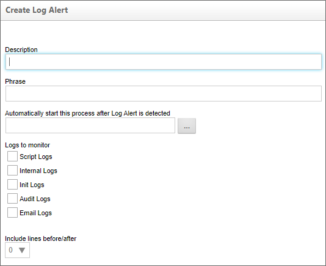

Log Alerts
For Process Director v6.1.X and higher, the Log Alerts page enables you to configure monitoring of any log file to provide an alert when a log entry is generated that matches a configured search term. The Log Alerts page displays a list of all configured log alerts.
To create a Log Alert, click the Create Log Alert action link to open the Create Log Alert page.

The Create Log Alert page provides several configuration settings to specify the logs you wish to monitor, the search terms that prompt an alert, and the alert response.
Description
The property provides the name/description of the Log Alert to create, and will be the name displayed in the list of alerts on the Log Alerts page.
Phrase
The property enables you to enter the search term (a specific word or phrase) to use when monitoring log entries. Any log entry that contains an exact match to your search term will prompt a Log Alert automatically.
 This property will accept a Regular Expression as a search term, to provide additional flexibility.
This property will accept a Regular Expression as a search term, to provide additional flexibility.
Automatically start this process after Log Alert is detected
The property enables you to specify a process to start when a Log Alert is triggered. For instance, you might have a simple process that consists of a notification step that send and email to a system administrator notifying them of the Log Alert. This property is the primary method for notifying and responding to any Log Alert.
Logs to Monitor
The property enables you to choose any of the log file types to monitor. At least one log file type must be selected, otherwise, no logs will be monitored, and no alerts will be generated.
Include lines before/after
The property enables you to specify the number of lines in the log file prior to, and after, the log entry that generated the alert. You can choose up to ten lines to include in the log alert.
Once configured, a Log Alert can be deleted by checking the checkbox for that Log Alert in the list, then clicking the Delete Log Alert action link.